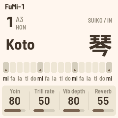
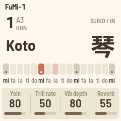
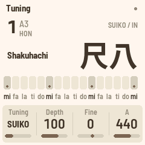
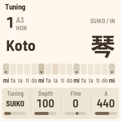
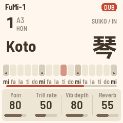

FuMi-1 文
Custom firmware for the M-VAVE FM-1, inspired by the Suiko ST-50 (水光トレーナー), the Japanese poetry-accompaniment instrument. The sixteen white keys are the ST-50's lower row, mi fa la ti do three times and a top mi; the black keys its upper row or koto ornaments; the key is set in 本数; the tuning switches between 平均律 and the ST-50's 純正律 as measured from recordings; the sounds are a koto, a second koto, sho, shakuhachi, two more flutes, a taiko and two wood blocks, each with its name in kanji on the screen; and REC is a looper, as the ST-50's 自動伴奏 was: play a phrase, loop it, play over it.





Playing
| White keys | mi fa la ti do × 3 and a top mi. The tonics (keys 1, 6, 11, 16) are lit. 三 is key 6. |
| Black keys | The upper row fa♯ sol ti♭ do♯ re, five per octave. SEQ switches them to ornaments: vibrato, trill, damp, strong pluck. |
| SELECT | 本数: 水4, 水3, 水2, 水1, 1 … 12. At 1本, 三 = A3. |
| PRESETS | The instrument: Koto 琴, Koto II 箏, Sho 笙, Shakuhachi 尺八, Dragon Flt 龍笛, Bamboo Flt 篠笛, Taiko 太鼓, Hyoshigi 拍子木, Mokugyo 木魚, Koto Pluck 爪音, Koto Ring 響, Koto Warm 名残, Harp 箜篌. |
| ALGORITHM | The scale: IN 陰, YŌ 陽, MIN'YŌ 民謡. |
| OCT− · OCT+ | With a note held: a sprung bend down or up (semitone, whole tone or the next scale note). With nothing held: the octave. Both held 5 s: update mode. |
| LFO · ARP · GLO | Vibrato, trill, mono (slide between notes). |
| SEL | Tap: 平均律 ↔ 純正律. Hold: the tuning page (EQUAL, SUIKO as measured, KOTO pure fifths, USER; depth; 微調; A = 430–445). |
| KNOB 1–4 | The page's four values. HOME: 余韻, trill rate, vibrato depth, reverb. FX: low cut, high cut, character, reverb size. EDIT: bend target, bend down, bend time, slide time. |
| REC | The looper. Tap: arm, and the first key starts the loop. Tap again: the loop closes where you are and plays (or it closes itself at 32 beats of 60 BPM). While it plays: overdub on / off. Each layer keeps the instrument it was recorded in, so turn PRESETS and play over it. Hold a second: clear. |
| PLAY | Stop / start the loop from the top. Hold a second: undo the last layer. |
| ENV | The Loop page: BPM, length in beats, click. |
| SAVE | Saves. FuMi-1 also saves by itself a few seconds after a change, once it's quiet. |
MIDI comes in over USB (chromatic) and goes out over USB. The patches are Yamaha DX7-format voices; the built-ins are community patches and FuMi's own, with no factory ROM voice among them.
To go back to the official firmware, use the installer's "Back to the stock firmware", or M-VAVE's updater, M-UPGRADE, from m-vave.com/download. Suiko and ST-50 are names of Suikohsha; M-VAVE and FM-1 are trademarks of their owners. FuMi-1 is affiliated with none of them. Site from commit 44e050d.